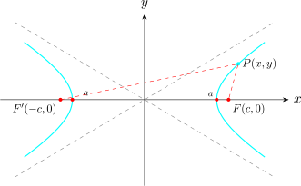

1.4 Hyperbola
A hyperbola is a locus of points \(P\) such that the difference of the distances from \(P\) to two fixed points \(F\) and \(F'\) (called the foci) is a constant. It is the one conic listed at the start of this section that the preceding pages have not yet treated, and the only change from the ellipse is that a sum becomes a difference — which is what turns a closed curve into two separate branches.

Let the foci be \(F(c,0)\) and \(F'(-c,0)\), and let the constant difference be \(2a\). If \(P(x,y)\) lies on the hyperbola then \[\left |F'P - FP\right | = 2a .\] Taking the branch nearer \(F\), so that \(F'P - FP = 2a\), \[\sqrt {(x + c)^2 + y^2} - \sqrt {(x - c)^2 + y^2} = 2a\]
\[\implies \hspace {0.5cm} \Big (\sqrt {(x + c)^2 + y^2}\Big )^2 = \Big (2a + \sqrt {(x - c)^2 + y^2}\Big )^2\]
\[\implies \hspace {0.5cm} x^2 + 2cx + c^2 + y^2 = 4a^2 + 4a\sqrt {(x - c)^2 + y^2} + \big (x^2 - 2cx + c^2 + y^2\big )\]
\[\implies \hspace {0.5cm} 4cx - 4a^2 = 4a\sqrt {(x - c)^2 + y^2}\]
\[\implies \hspace {0.5cm} \Big (cx - a^2\Big )^2 = \Big (a\sqrt {(x - c)^2 + y^2}\Big )^2\]
\[\implies \hspace {0.5cm} c^2x^2 - 2a^2cx + a^4 = a^2\Big [(x - c)^2 + y^2\Big ]\]
\[\implies \hspace {0.5cm} c^2x^2 - 2a^2cx + a^4 = a^2x^2 - 2a^2cx + a^2c^2 + a^2y^2\]
\[\implies \hspace {0.5cm} c^2x^2 + a^4 = a^2x^2 + a^2c^2 + a^2y^2\]
\[\implies \hspace {0.5cm} x^2\big (c^2 - a^2\big ) - a^2y^2 = a^2\big (c^2 - a^2\big )\]
Note the single difference from the ellipse: there \(a^2 - c^2\) appeared and was negative, so \(b^2 = a^2 - c^2\) was taken with \(c<a\). Here \(c>a\), because the difference of two sides of a triangle is less than the third, so \(2a < 2c\). Accordingly let \[b^2 = c^2 - a^2 , \qquad \text {that is}\qquad c^2 = a^2 + b^2 ,\] and divide through by \(a^2b^2\):
\[\boxed {\implies \hspace {0.5cm}\dfrac {x^2}{a^2} - \dfrac {y^2}{b^2} = 1}\]
which is the standard equation of a hyperbola whose foci lie on the \(x-\)axis.
The parts of a hyperbola
- i
- The points \((\pm a, 0)\) are the vertices. Setting \(y=0\) gives \(x = \pm a\), so the curve meets the \(x-\)axis there and nowhere else.
- ii
- The segment joining the vertices, of length \(2a\), is the transverse axis; the segment from \((0,-b)\) to \((0,b)\), of length \(2b\), is the conjugate axis. The curve does not meet the conjugate axis: setting \(x=0\) gives \(y^2 = -b^2\), which has no real solution. This is exactly why the hyperbola falls into two branches while the ellipse does not.
- iii
- The lines \(y = \pm \dfrac {b}{a}x\) are the asymptotes. Solving the standard equation for \(y\) gives \(y = \pm \dfrac {b}{a}x\sqrt {1 - \dfrac {a^2}{x^2}}\), and the square root tends to \(1\) as \(|x|\) grows, so the branches approach these lines without meeting them. They are derived in full in the subsection on asymptotes below, and they are the single most useful aid in sketching the curve.
- iv
- The eccentricity is \(e = \dfrac {c}{a}\), and since \(c>a\) we always have \(e>1\) — the criterion met again in the subsection on eccentricity.
If a hyperbola has its foci on the \(y-\)axis, the roles of \(x\) and \(y\) are exchanged and its standard equation is \(\boxed {\dfrac {y^2}{a^2} - \dfrac {x^2}{b^2} = 1}\) with vertices \((0,\pm a)\), foci \((0,\pm c)\) and asymptotes \(y = \pm \dfrac {a}{b}x\).
Note. It is the sign, not the relative size of the denominators, that tells the two apart. For an ellipse the larger denominator sits under the variable whose axis is the major one; for a hyperbola the positive term identifies the axis the curve opens along, whatever the sizes of \(a\) and \(b\). In \(\dfrac {y^2}{4} - \dfrac {x^2}{9} = 1\) the curve opens along the \(y-\)axis even though \(9>4\).
Example 1.4.1. Find the standard equation of the hyperbola with foci \((\pm 5, 0)\) and vertices \((\pm 3, 0)\), and give its asymptotes and eccentricity.
Solution. The foci lie on the \(x-\)axis, so the equation has the form \(\dfrac {x^2}{a^2} - \dfrac {y^2}{b^2} = 1\) with \(c = 5\) and \(a = 3\). Then \[b^2 = c^2 - a^2 = 25 - 9 = 16 .\] Hence \[\dfrac {x^2}{9} - \dfrac {y^2}{16} = 1 .\] The asymptotes are \(y = \pm \dfrac {b}{a}x = \pm \dfrac {4}{3}x\), and the eccentricity is \(e = \dfrac {c}{a} = \dfrac {5}{3}\).
As a check, take the point \(\Big (5, \dfrac {16}{3}\Big )\), which satisfies the equation since \(\dfrac {25}{9} - \dfrac {256/9}{16} = \dfrac {25}{9} - \dfrac {16}{9} = 1\). Its distances to the foci are \[F'P = \sqrt {10^2 + \Big (\tfrac {16}{3}\Big )^2} = \dfrac {34}{3}, \qquad FP = \sqrt {0 + \Big (\tfrac {16}{3}\Big )^2} = \dfrac {16}{3},\] and their difference is \(\dfrac {34}{3} - \dfrac {16}{3} = 6 = 2a\), as the definition requires.
Solution. Divide throughout by \(144\) to reach standard form: \[\dfrac {9x^2}{144} - \dfrac {16y^2}{144} = 1 \hspace {0.5cm}\implies \hspace {0.5cm} \dfrac {x^2}{16} - \dfrac {y^2}{9} = 1 .\] So \(a^2 = 16\) and \(b^2 = 9\), giving \(a = 4\), \(b = 3\) and \[c^2 = a^2 + b^2 = 16 + 9 = 25 \implies c = 5 .\] The positive term is in \(x\), so the curve opens along the \(x-\)axis. Therefore the vertices are \((\pm 4, 0)\), the foci are \((\pm 5, 0)\), the transverse axis has length \(8\) and the conjugate axis length \(6\), the asymptotes are \(y = \pm \dfrac {3}{4}x\), and the eccentricity is \(e = \dfrac {5}{4}\).
To sketch it: mark the vertices, draw the rectangle with corners \((\pm 4, \pm 3)\), draw its diagonals extended — these are the asymptotes — and draw the branches through the vertices approaching them.
Example 1.4.3. Find the equation of the hyperbola with vertices \((0,\pm 2)\) passing through the point \(\big (\sqrt {3}\,, 4\big )\).
Solution. The vertices lie on the \(y-\)axis, so the equation has the form \[\dfrac {y^2}{a^2} - \dfrac {x^2}{b^2} = 1 , \qquad a = 2 .\] Substituting the point \(\big (\sqrt {3}, 4\big )\), \[\dfrac {16}{4} - \dfrac {3}{b^2} = 1 \hspace {0.5cm}\implies \hspace {0.5cm} 4 - \dfrac {3}{b^2} = 1 \hspace {0.5cm}\implies \hspace {0.5cm} \dfrac {3}{b^2} = 3 \hspace {0.5cm}\implies \hspace {0.5cm} b^2 = 1 .\] Hence \[\dfrac {y^2}{4} - x^2 = 1 ,\] with \(c^2 = a^2 + b^2 = 5\), foci \(\big (0, \pm \sqrt {5}\big )\), asymptotes \(y = \pm 2x\) and eccentricity \(e = \dfrac {\sqrt {5}}{2}\).
Questions on this section
Stuck on something here? Ask below and it stays attached to this topic.